Released on July 25, 2007
(Next Release on August 1, 2007)
Time Will Tell
For many situations, time will provide the answer, if we are willing to wait long enough. By the end of the year, we will know whether the Boston Red Sox will retain their big lead in the standings, whether the U.S. women’s soccer team won the World Cup, and if David Beckham was able to lead the Los Angeles Galaxy soccer team to the playoffs. In oil markets, the path of stock levels over the remainder of the year will be closely watched. Many analysts expect global oil demand to grow at a strong enough rate that stocks look likely to decline significantly relative to normal rates over the second half of the year, especially if OPEC does not appreciably increase oil production.
EIA, like many others, is calling for much faster demand growth in the second half of the year than seen recently. Table 3 of EIA’s Short-Term Energy Outlook, shows third quarter 2007 global demand 1.7 million barrels over the third quarter 2006 demand level, while fourth quarter 2007 demand is expected to be 1.9 million barrels per day higher than in the last quarter of 2006. This compares to global demand growth of just 0.4 million barrels per day over year-ago levels in the first quarter this year and 1.4 million barrels per day for the second quarter. Part of this pattern is explained by warm weather in much of the Northern Hemisphere at the end of last year and the beginning of this year. But there remains an assumption that high oil prices will not impact demand significantly, in part, because for much of the world, the price increase has been somewhat muted as oil is priced in dollars and the dollar has been falling compared to most major currencies. In EIA’s projections, this expected growth in demand leads to larger inventory draws relative to normal patterns.
While nearly all analysts understand that oil markets are global, some (perhaps, too much) emphasize U.S. oil stock levels, simply because they are current, reliable, highly visible, and released on a weekly basis. As Figure 2 in the Weekly Petroleum Status Report illustrates (scroll down to Figure 2 at the bottom of the link), total commercial U.S. oil stocks (excluding those in the Strategic Petroleum Reserve), remain above the middle of the average range, even as they have fallen since last autumn compared to the normal range. However, using data through May 2007 from the International Energy Agency’s July 2007 Oil Market Report, stocks in the Organization for Economic Cooperation and Development (OECD) Pacific region were at the very bottom of the average range (defined as the average level in each month for the 10-year period 1996-2005 plus or minus one standard deviation) at the end of May this year, as shown below. Clearly, at least in some parts of the globe, there is not much room for stocks to draw further. Should global demand increase as expected, trade patterns will probably shift in such a way that those regions with more stocks (relative to the average range) will likely see a larger stock draw than other areas. This could lead to larger than normal draws in the United States, which could lead to greater, possibly exaggerated, upward price pressure, given the visibility of the U.S. weekly stock data.
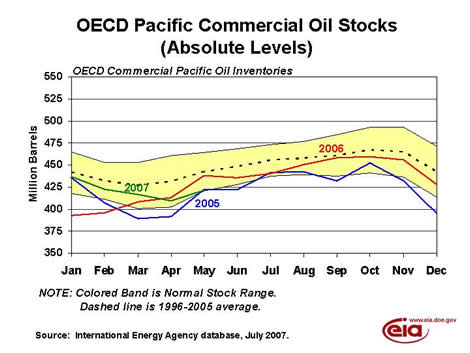
While no one knows for sure whether demand will grow as strongly as expected, or even what OPEC will eventually do, we can make estimates based on trends. Recent comments by OPEC officials recently, indicate a possible willingness to increase production in the future, should demand remain strong. While we will know by the end of the year whether or not the Red Sox maintained their big lead in the standings and the impact David Beckham had on the Los Angeles Galaxy fortunes this year, it might take a few months longer than that, given the lag in global oil data, to know whether analysts’ projections for the second half of the year were correct. But, eventually, time will tell if most of the analysts were right or wrong.
Gasoline Prices Drop 9 Cents
The U.S. average retail price for regular gasoline decreased, falling 9.1 cents to 295.8 cents per gallon as of July 23, 2007. Prices are 4.5 cents per gallon lower than this time last year. All regions recorded price drops. East Coast prices fell 4.8 cents to 292.4 cents per gallon. Registering the second largest weekly decrease ever in the Midwest region, prices declined 18.8 cents to 298.4 cents per gallon. Prices for the Gulf Coast were 5.4 cents less, settling at 286.7 cents per gallon. In the Rocky Mountain region, prices were 303.8 cents per gallon, down 5.5 cents this week but 13.1 cents per gallon above last year. West Coast prices, highest in the Nation, decreased 3.8 cents to 305.1 cents per gallon. The average price for regular grade in California was 4.0 cents lower at 311.8 cents per gallon.
Retail diesel prices were unchanged at 288.9 cents per gallon. Prices are 5.7 cents per gallon lower than at this time last year. Regional prices were mixed with East Coast prices dropping by 1.4 cents to 286.0 cents per gallon. In the Midwest, prices rose 0.4 cent to 288.2 cents per gallon, while the Gulf Coast saw a decline of 0.6 cent to 281.5 cents per gallon. The Rocky Mountain region gained 1.1 cents, to settle at 298.8 cents per gallon. The West Coast price grew 3.0 cents to 306.1 cents per gallon, 1.4 cents per gallon higher than at this time last year. California prices also rose, by 1.1 cents, to 315.8 cents per gallon.
Propane Inventories Post Weak Build
Lower production and a sharp drop in imports last week contributed to a build of only 0.1 million barrels, inching inventories up to an estimated 47.9 million barrels as of July 20, 2007. Except for a net loss in inventories during the third week of the traditional build season, last week’s gain was the lowest reported since the end of the heating season in March 2007. Regional activity showed mixed results, with only the Midwest region reporting a gain that measured 1.0 million barrels. While the East Coast reported a modest 0.1-million-barrel loss, the Gulf Coast reported a much larger 0.8-million-barrel decline during this same time. However, large inventory movements between the Gulf Coast and the Midwest are typical as inventories are repositioned closer to peak winter demand regions. The combined Rocky Mountain/West Coast region remained relatively unchanged last week. Propylene non-fuel use inventories plunged 0.3 million barrels last week and accounted for a sharply lower 5.0 percent share of total propane/propylene inventories, compared with the prior week’s 5.6 percent share.
Text from the previous editions of “This Week In Petroleum” is now accessible through a link at the top right-hand corner of this page.
| Retail Prices (Cents Per Gallon) | |||||||
| 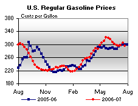 | 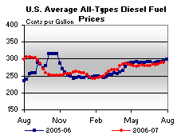 | ||||||
| Retail Data | Changes From | Retail Data | Changes From | ||||
| 07/23/07 | Week | Year | 07/23/07 | Week | Year | ||
| Gasoline | 295.8 | Diesel Fuel | 288.9 | ||||
| Spot Prices (Cents Per Gallon) | |||||||||||||||||||||||||||||||||||||||
| 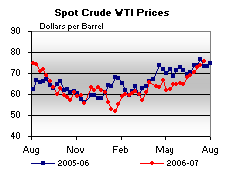 | 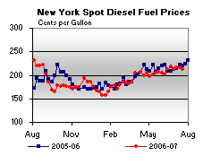 | ||||||||||||||||||||||||||||||||||||||
| 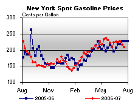 | 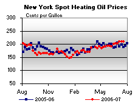 | ||||||||||||||||||||||||||||||||||||||
|
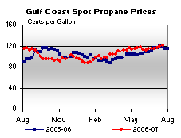 | ||||||||||||||||||||||||||||||||||||||
| Stocks (Million Barrels) | |||||||
| 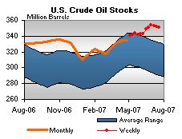 | 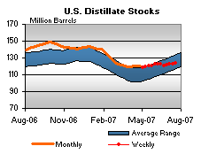 | ||||||
| 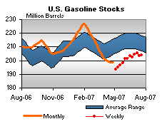 | 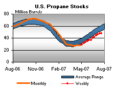 | ||||||
| Stocks Data | Changes From | Stocks Data | Changes From | ||||
| 07/20/07 | Week | Year | 07/20/07 | Week | Year | ||
| Crude Oil | 351.0 | Distillate | 123.7 | ||||
| Gasoline | 204.1 | Propane | 47.940 | ||||